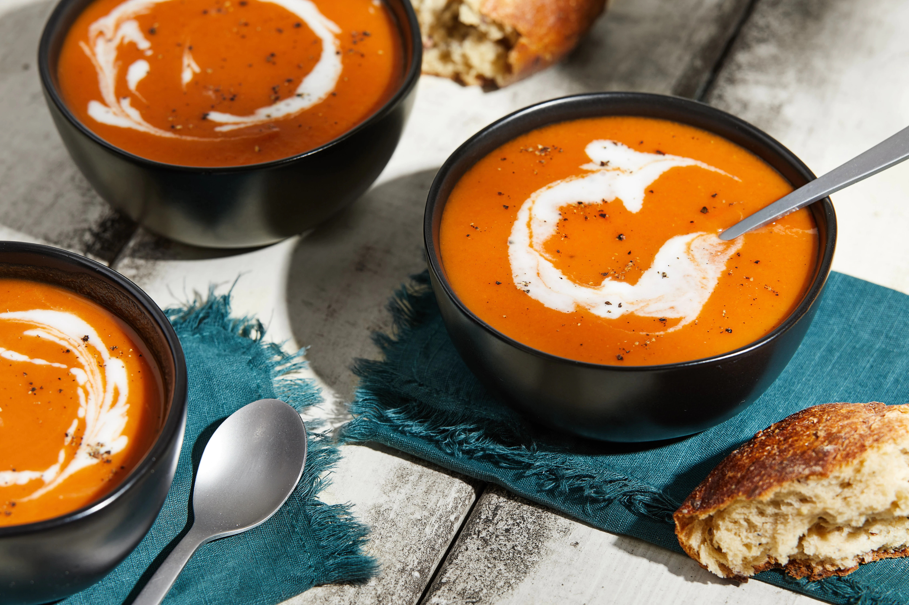

Meowscular Chef's Platter: Tomato and Pumpkin Soup

Image source
Hearty and creamy tomato and pumpkin soup
Serves: 6
Ingredients:
- 2 cups pumpkin puree
- 14 oz or 400 ml canned tomatoes
- 2 cups vegetable broth
- ½ cup cream
- salt
For pumpkin puree:
Steps:
- In a large pot mix tomatoes, pumpkin and broth. Boil for 15 minutes.
- Use blender to make the soup smooth.
- Add cream, salt to taste and serve.
For pumpkin puree:
- Slice pumpkin in half. Scoop out and remove the seeds.
- Cut rest of the pumpkin into medium-size chunks.
- Put pumpkin chunks into large pot. Add water, so that it barely cover the pieces and boil
- Add the remaining ingredients and bring the stock to a boil for 45 minutes, until pumpkin comletely softened.
Back to main